Demonstrate feedback control of an airship.
Trim controls are at zero alpha, zero beta.
Initial non-zero values for alpha, beta, angular rates are corrected via feedback control.
Computes a data structure with time histories of states and controls. Loads stored file AirshipControllers.mat
------------------------------------------------------------------------------- See also QECI, AC, ACInit, ACPlot, HUD, HUDCntrl, @acstate/acstate.m, LatLon, AirshipTrim, AirshipCV, BuildAirshipModel, C2DZOH, Limit, CoordinateTransform, Plot2D, TimeGUI, Cross, JD2000 -------------------------------------------------------------------------
Contents
- Global for the time GUI
- Global for the HUD
- Airship database
- Trim Controls
- initial position
- initial velocity
- initial orientation
- adjust r0 to account for non-CG location of origin
- not used
- time info
- Initialize the state and model
- Set up the HUD
- Set up the aircraft display
- Initialize the plots
- Initialize the time display
- Set up discrete controllers
- actuator limits
- Create the plots
%------------------------------------------------------------------------------- % Copyright 2003 Princeton Satellite Systems, Inc. % All rights reserved. %------------------------------------------------------------------------------- % Initial angle of attack [rad] alpha = 2*pi/180; % Initial linear velocity magnitude [m/s] beta = 1*pi/180; % Initial angular velocity vector [rad/s] V = 24; % Initial angular velocity vector [rad/s] w0 = [0;0;0]; % Initial altitude [m] alt = 21336; % Simulation time [sec] T = 100; % Plotting flag (1 plot, 0 do not) doPlot= []; Vd = V + 5; % desired velocity
Global for the time GUI
%------------------------ global simulationAction simulationAction = ' ';
Global for the HUD
%------------------- global hUDOutput hUDOutput = struct('pushbutton1',0,'pushbutton2',0,'checkbox1',0,... 'checkbox2',0,'checkbox3',0);
Airship database
%----------------- d = BuildAirshipModel('ASM1',AirshipCV(250/3,250*2/3));
Trim Controls
%--------------
[trimThrust,trimMu,trimDElv] = AirshipTrim( d, alt, 0, 0, Vd );
trimThrottle = trimThrust/(2*d.engine.thrustMax);
d.control.throttle = trimThrottle;
d.control.mu = trimMu;
d.control.dELVL = trimDElv;
d.control.dELVR = trimDElv;
d.control.dRUDB = 0;
d.control.dRUDT = 0;
initial position
%----------------- jD = JD2000; [lat,lon] = LatLon('new york city'); latLonAlt = [lat*pi/180;lon*pi/180;alt*1e-3]; rCG = CoordinateTransform( 'llr', 'eci', latLonAlt, jD ); rCG = rCG*1e3;
initial velocity
%----------------- vy = V*sin(beta); vx = sqrt( V^2 - vy^2 )*cos(alpha); vz = vx*tan(alpha); vCG = [vx;vy;vz]; % initial body-frame velocity of airship CG v0 = vCG - Cross(w0,d.cG);
initial orientation
%-------------------- eulInit = [0;0;0]; % initial orientation (aligned x-north, y-east, z-down) q0 = QECI( rCG, eulInit ); % initial ECI to body quaternion
adjust r0 to account for non-CG location of origin
%---------------------------------------------------
r0 = rCG - d.cG;
not used
%---------
wR = [];
engine = [];
actuator = [];
sensor = [];
flex = [];
disturb = [];
time info
%---------- %T = 300; t = 0; dT = .5; nSim = T/dT;
Initialize the state and model
%-------------------------------
x = acstate( r0, q0, w0, v0, wR, d.mass, d.inertia, d.cG, engine, actuator, sensor, flex, disturb );
d = ACInit( x, d );
Set up the HUD
%--------------- dHUD.atmData = d.atmData ; dHUD.atmUnits = 'si'; cHUD.control.rudder = 0; cHUD.control.aileron = 0; cHUD.control.elevator = d.control.dELVL*180/pi; cHUD.control.throttle = d.control.throttle; cHUD.elevatorMax = 60; cHUD.aileronMax = 60; cHUD.rudderMax = 60; cHUD.dT = dT; hHUD = HUD( 'init', dHUD, x, [], cHUD );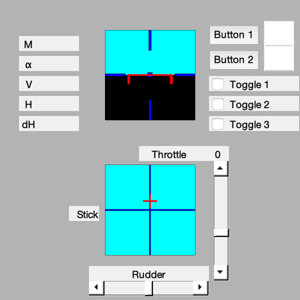
Set up the aircraft display
%---------------------------- %gHAA = load( 'gHAA' ) %hHAA = DrawAC( 'init', gHAA, x, [], d.atmUnits );
Initialize the plots
%--------------------- plots = [ 'Euler angles ';... 'Quaternion ';... 'Quaternion NED To B';... 'Angular rate ';... 'Position ECI ';... 'Velocity ';... 'Alpha ';... 'Rudder ';... 'Throttle ';... 'Aileron ';... 'Elevator ']; dPlot = ACPlot( x, 'init', plots, d, nSim, dT, nSim ); muPlot = zeros(1,nSim);
Initialize the time display
%---------------------------- tToGoMem.lastJD = 0; tToGoMem.lastStepsDone = 0; tToGoMem.kAve = 0; [ ratioRealTime, tToGoMem ] = TimeGUI( nSim, 0, tToGoMem, 0, dT, 'Airship Simulation' );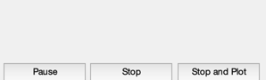
Set up discrete controllers
%---------------------------- con = load('AirshipControllers'); [~,~,cktu,dktu] = getabcd(con.k_tu); % controller: u-to-throttle [~,~,ckmu,dkmu] = getabcd(con.k_mu); % controller: u-to-mu [~,~,ckdq,dkdq] = getabcd(con.k_dq); % controller: q-to-dELV [~,~,ckdw,dkdw] = getabcd(con.k_dw); % controller: w-to-dELV [~,~,ckrr,dkrr] = getabcd(con.k_rr); % controller: u-to-mu [~,~,ckrv,dkrv] = getabcd(con.k_rv); % controller: q-to-dELV [ak,bk,ckap,dkap] = getabcd(con.k_ap); % controller: w-to-dELV [ak, bk] = C2DZOH( ak, bk, dT ); xktu = zeros(2,1); xkmu = zeros(2,1); xkdq = zeros(2,1); xkdw = zeros(2,1); xkrr = zeros(2,1); xkrv = zeros(2,1); xkap = zeros(2,1); mu = 0;
actuator limits
%---------------- flapLim = [60 -60]*pi/180; muLim = [45 -45]*pi/180; for k = 1:nSim % Display the status message %--------------------------- [ ratioRealTime, tToGoMem ] = TimeGUI( nSim, k, tToGoMem, ratioRealTime, dT ); % HUD information %---------------- hHUD = HUD( 'run', dHUD, x, hHUD, cHUD ); w = get(x,'w'); v = get(x,'v'); r = w(3); % Compute errors %--------------- ue = Vd - v(1); % axial velocity error ve = 0 - v(2); % lateral velocity error we = 0 - v(3); % normal velocity error pe = 0 - w(1); % roll rate error qe = 0 - w(2); % pitch rate error re = ve/5 - w(3); % yaw rate error % Controls %--------- % u to throttle xktu = ak*xktu + bk*ue; th = cktu*xktu + dktu*ue; % w to dELV xkdw = ak*xkdw + bk*we; dew = ckdw*xkdw + dkdw*we; % q to dELV xkdq = ak*xkdq + bk*qe; deq = ckdq*xkdq + dkdq*qe; % r to dRUD xkrr = ak*xkrr + bk*re; drr = ckrr*xkrr + dkrr*re; % v to dRUD xkrv = ak*xkrv + bk*ve; drv = ckrv*xkrv + dkrv*ve; % p to dAIL xkap = ak*xkap + bk*pe; da = ckap*xkap + dkap*pe; d.control.dELVL = trimDElv + dew + deq + .25*da; d.control.dELVR = trimDElv + dew + deq - .25*da; d.control.dRUDB = drr + drv + .25*da; d.control.dRUDT = drr + drv - .25*da; d.control.throttle = trimThrottle + th; d.control.mu = trimMu; d.control.dELVL = Limit( d.control.dELVL, flapLim ); d.control.dELVR = Limit( d.control.dELVR, flapLim ); d.control.dRUDB = Limit( d.control.dRUDB, flapLim ); d.control.dRUDT = Limit( d.control.dRUDT, flapLim ); d.control.throttle = Limit( d.control.throttle, [1 0] ); d.control.mu = Limit( d.control.mu, muLim ); hHUD.control.throttle = d.control.throttle; hHUD.control.elevator = .5*(d.control.dELVL+d.control.dELVR)*180/pi; hHUD.control.aileron = (d.control.dELVL-d.control.dELVR+d.control.dRUDB-d.control.dRUDT)*180/pi; hHUD.control.rudder = .5*(d.control.dRUDB+d.control.dRUDT)*180/pi; % Plotting %--------- dPlot = ACPlot( x, 'store', dPlot, hHUD.control ); muPlot(k) = trimMu + mu; % 3D Display %----------- %hHAA = DrawAC( 'run', gHAA, x, hHAA, d.atmUnits ); % The simulation %--------------- x = AC( x, t, dT, d ); t = t + dT; % Time control %------------- switch simulationAction case 'pause' pause simulationAction = ' '; case 'stop' TimeGUI('close'); return; case 'plot' break; end HUDCntrl; end TimeGUI('close');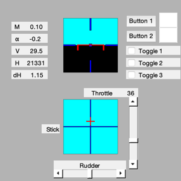
Create the plots
%----------------- if( length(dPlot.t) < dPlot.kPlot ) dPlot.kPlot = length(dPlot.t); end ACPlot( x, 'plot', dPlot ); Plot2D( (1:k)*dT, muPlot(1:k)*180/pi, 'Time [sec]', 'prop pitch angle' ); out = dPlot; %--------------------------------------
 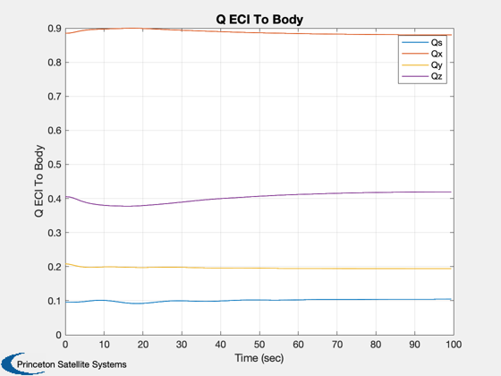 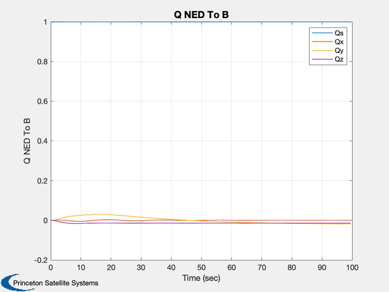 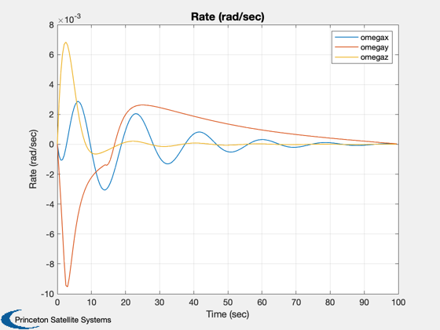 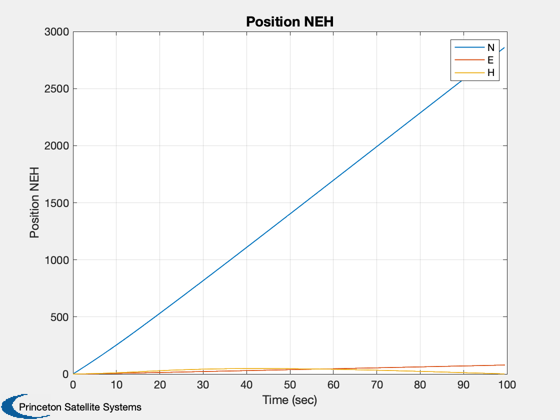
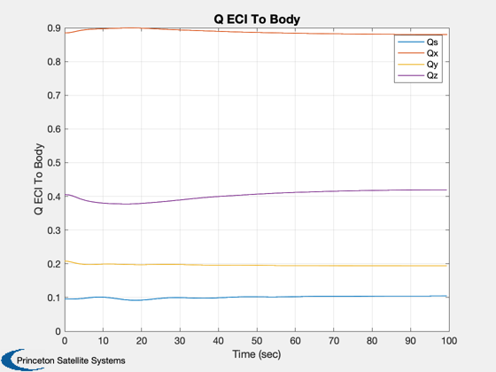 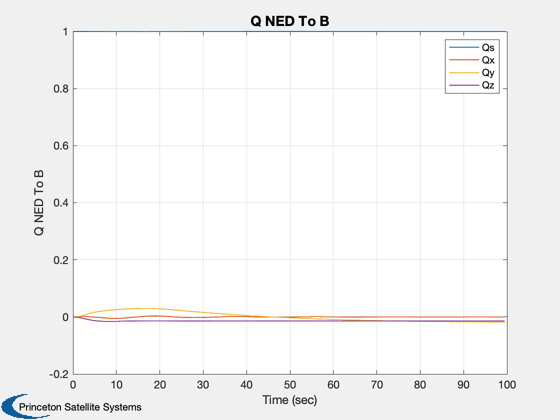 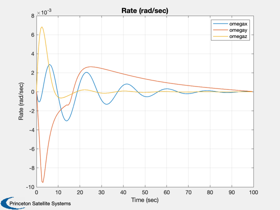 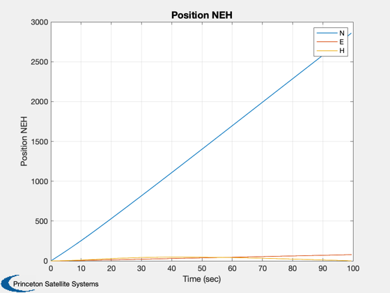  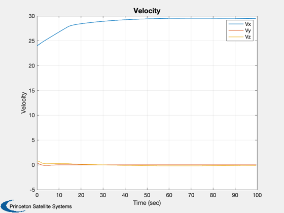 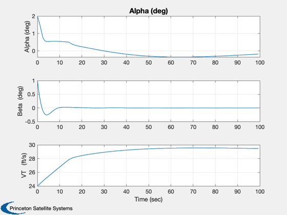 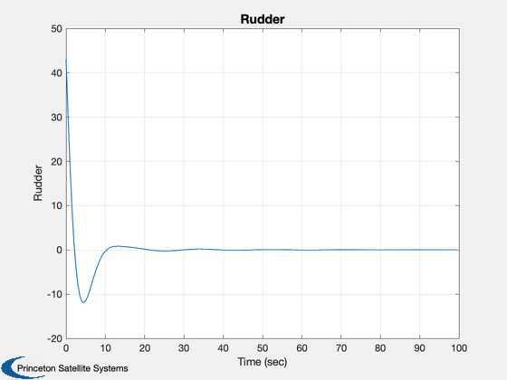 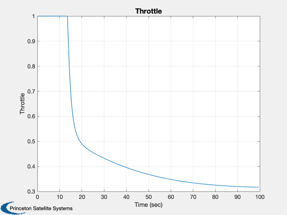 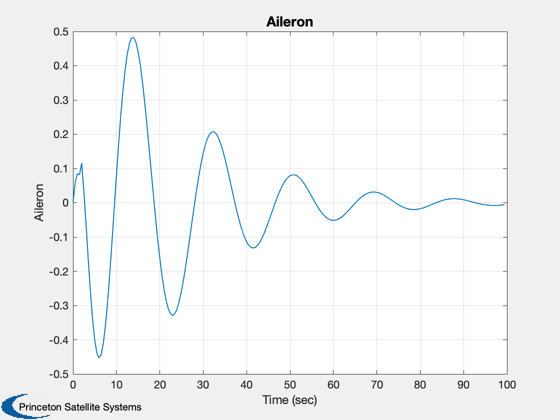 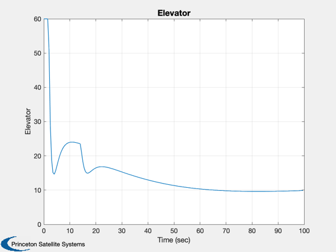 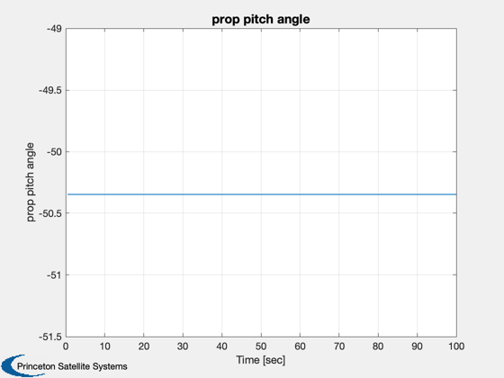
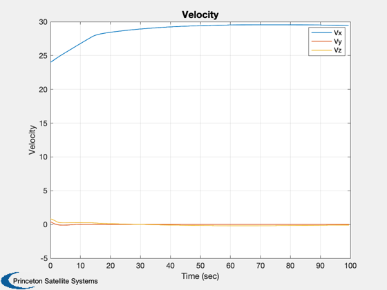 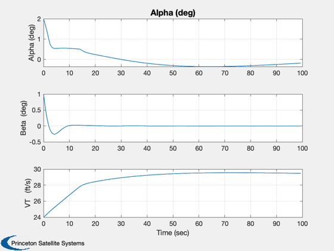 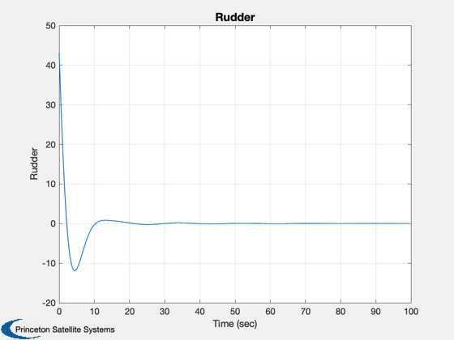 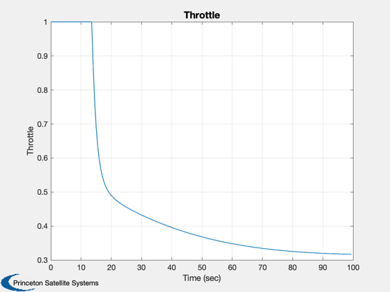 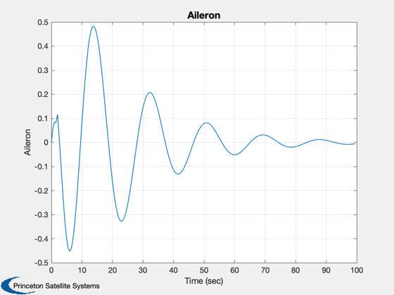 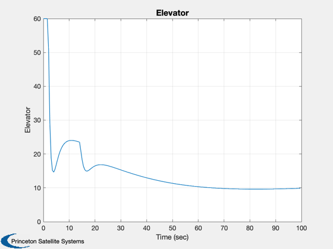 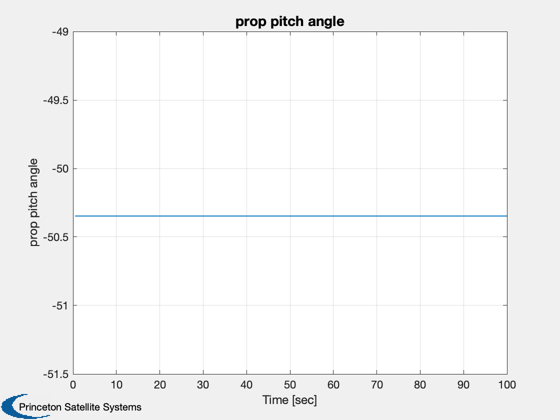